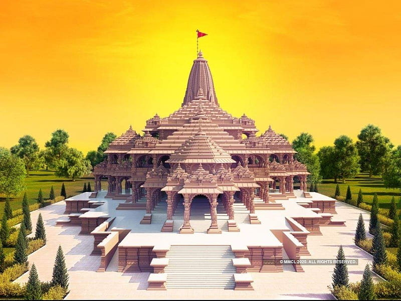
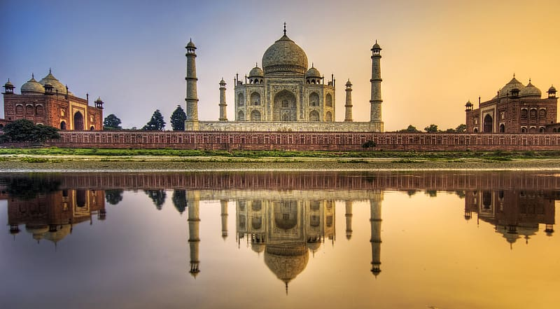
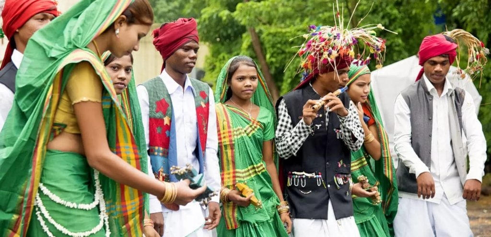
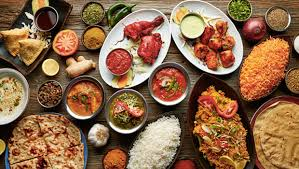
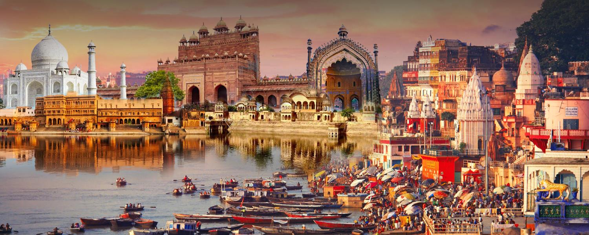

| ✧ Aspect | Information |
|---|---|
| ✧ Capital | Lucknow |
| ✧ Chief minister | Yogi Adityanath |
| ✧ Largest City | Lucknow |
| ✧ Districts | 75 |
| ✧ Official Language | Hindi | ✧ Other Language | Urdu, Awadhi, Braj, Bhojpuri, Bundelkhandi and English |
| ✧ Population | Approximately 220 million |
| ✧ Area | 243,286 square kilometers |
| ✧ Major Rivers | Yamuna, Ganga, Ghaghara |
| ✧ Major Industries | Textiles, Sugar, Leather, Electronics, Agriculture |
| ✧ Popular Places | Taj Mahal, Agra Fort, Fatehpur Sikri, Varanasi Ghats, Allahabad Sangam |
The traditional attire of Uttar Pradesh varies among different communities. For men, it includes kurta-pajama or dhoti-kurta, and for women, it ranges from sarees like Banarasi and Lucknowi to salwar kameez and lehenga-choli.
Urdu, Awadhi, Braj, Bhojpuri, Bundelkhandi and English, often abbreviated as UP, is one of the most populous and culturally rich states in India. Its history can be traced back to ancient times, with evidence of human settlements dating back to the Vedic period. Over the centuries, Uttar Pradesh has been home to several major empires and dynasties, including the Mauryas, Guptas, Mughals, and Nawabs of Awadh.
The region flourished as a center of art, culture, and learning during various periods of history. It witnessed the golden age of Indian civilization under emperors like Ashoka and Akbar, who left behind a legacy of magnificent architecture and literary works.
Uttar Pradesh played a crucial role in the Indian independence movement, with leaders like Mahatma Gandhi, Jawaharlal Nehru, and Subhas Chandra Bose spearheading campaigns against British colonial rule. The state was witness to significant events such as the 1857 Revolt, also known as the First War of Independence, which began in Meerut and spread across the region.
After India gained independence in 1947, Uttar Pradesh emerged as a major political and economic force in the country. It has contributed significantly to India's development in various fields, including agriculture, industry, and education. However, the state also faces challenges such as poverty, unemployment, and social inequality, which continue to be addressed through government initiatives and social reforms.
Today, Uttar Pradesh remains a melting pot of diverse cultures, languages, and traditions. Its rich heritage, reflected in its ancient temples, monuments, and festivals, continues to attract visitors from around the world, ensuring that the history of Uttar Pradesh remains alive and cherished.




